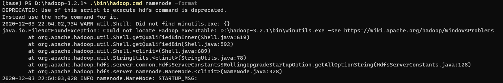
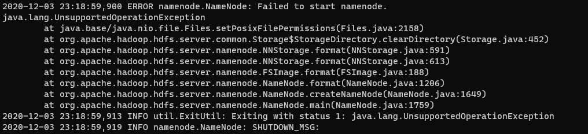

开始 花了亿点点时间准备单机环境。 下载Spark、Hadoop 安装、配环境变量，查看版本 修改core-site.xml、hdfs-site、mapred-site、yarn-site 报错需要winutils.exe 搜索，没有对应版本 下载源码，准备编译环境，编译到一半发现Github有人编译过了 下载格式化NameNode和DataNode 还没有写完哦~ 后面继续更新不影响~ 先上几张截图~  